|
|
|
MAGuS verfügt über die folgenden Oberflächenelemente:
|
| Zum Seitenanfang |
Menüleiste
Üer die Pulldown-Menüs lassen sich verschiedene Programmfunktionen steuern:
- Datei:
- Neuer Abenteurer:
MAGuS wird zurückgesetzt und es kann ein neuer Abenteurer generiert werden.
- Neuer Abenteurer mit Wizard:
MAGuS wird zurückgesetzt und der Wizard wird gestartet, mit dessen Unterstützung ein neur Grad 1
Abenteurer erschaffen werden kann.
- Wizard beenden:
Der Wizard wird abgeschaltet (auch während der Generierung eines Abenteurers möglich).
- Öffnen:
Laden eines existierenden Abenteurers:
- Zuletzt geladen:
Laden eines Abenteurers aus Liste der n zuletzt bearbeiteten Abenteurer (n - 1-9)
- Speichern:
Speichern eines existierenden Abenteurers
- Speichern unter:
Speichert einen Abenteurer in ein wählbares Verzeichnis unter einem frei wählbaren Namen (Default:
[Abenteurername].magus)
- Exportieren:
Exportiert die aktuelle Figur als Textdatei (.txt) im offiziellen Abenteuer-Format
- Drucken:
Erstellt die Dokumente im PDF-Format (Dieses Menü ist auch über die rechte Maustaste zugänglich)
- Abenteurerdokument:
Erstellt das "Hauptdokument" mit allen wichtigen Werten und Fertigkeiten
- Ausrüstungsdokument:
- Nur sichtbares:
Es wird ein Dokument erstellt, welches nur die für dritte sichtbare Ausrüstung zeigt
- Alles drucken:
Es wird ein Dokument mit allen Ausrüstungsteilen erstellt.
- Beschreibung:
Das Dokument mit der Abenteurerbeschreibung wird erstellt
- Alles drucken:
Alle obigen Dokumente werden erstellt.
- Leeres Abenteurerblatt:
Es wird ein leeres "Hauptdokument" erzeugt.
- Spielleiterbogen:
Es wird ein Spielleiterbogen erstellt, welcher wichtige Spielwerte und Fertigkeiten aller
im Augenblick in MAGuS geöffneten Figuren enthält.
- Schließen:
Der aktuell bearbeitete Abenteurer wird geschlossen (Mit Nachfrage falls dieser
noch nicht gespeichert wurde)
- Beenden:
Beendet MAGUS (mit Nachfrage wenn ungesicherte Abenteurer existieren)
- Ferner werden hier die zuletzt bearbeiteten Figuren angezeigt (bis zu 10)
Bearbeiten:
- Rückgängig:
Letzten Schritt rückgängig machen
- Erneut/Vorwärts:
Rückgängig gemachten Schritt wiederholen
Abenteurer:
Die Liste der aktuell in Magus geöffneten Abenteurer. Durch die Auswahl eines
Eintrages, wird der entsprechende Abenteurer zum aktuell bearbeiteten.
Ansicht & Fenster:
- Ansicht & Fenster:
- Info Fenster zeigen:
öffnet das Info-Fenster
- Lernschema/Steigern ausw�lbar machen:
Hiermit werden die Funktionen auf den Notebookseiten "Lernschema" und "Steigern"
aktiviert.
- Gestaltung:
Ermölicht das Anpassen des Erscheinungsbildes vom MAGUS (siehe: Optionen)
- Optionen:
Wechsel auf die Notebookseite "Optionen"
Regionen:
Hier können Regionen und Regelerweiterweiterungen angewählt werden (siehe: Optionen)
Erweiterungen:
Hier können einige Einstellungen vorgenommen werden, die das Verhalten von MAGuS
beeinflussen.
- Originalregeln:
MAGuS arbeitet mit Originalregeln. (Das Midgard-Logo erscheint in der Statuszeile)
- NSC zulassen:
Modus für Nichtspieler-Figuren wird aktiviert
- Zauberbeschreibung drucken:
Auf dem Zauberdokument wird zusätzlich eine Kurzbeschreibung der jeweiligen Zauber ausgedruckt
- Ausserdem sinf einige Hausregeln anwählbar.
Hilfe:
- Anleitung:
öffnet diese Hilfe
- Über MAGuS:
Wechsel auf die Notebookseite "Über MAGuS"
- Neuigkeiten:
Wechsel auf die Notebookseite "Neuigkeiten"
|
| Zum Seitenanfang |
Ständige Buttonleiste

Über die ständige Buttonleiste sind einige wichtige Funktionen von MAGuS zugänglich, die von jeder Stelle
im Programm aus genutzt werden können.
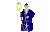
MAGUS-Style
|
Üer die Optionen läßt sich das Aussehen von MAGuS verändern. Die Buttonleiste existiert in drei Varianten:
In der MAGuS-Style Variante, dem originärem gtk+-Style und dem WindowsXP nachempfunden Win32-Style
|
Shortcut
|
Gtk-Style
|

Win32-Style
|
| |
Neuer Abenteurer:
1) Neu mit Wizard: MAGuS wird zurückgesetzt und es kann ein neuer Abenteurer mit Wizardunterstützung generiert werden.
2) Neu ohne Wizard: MAGuS wird zurückgesetzt und es kann ein neuer Abenteurer generiert werden.
|
- STRG+N
- ALT+N
|
|
 |
| 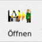 |
Öffnen:
Laden eines existierenden Abenteurers |
STRG+O |
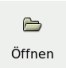 |
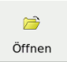 |
| |
Speichern:
Speichern: Speichern des aktuellen Abenteurers
Speichern unter: Speichern des aktuellen Abenteurers mit der Möglichkeit einen (neuen) Dateinamen zu vergeben
|
- STRG+S
- -
|
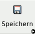 |
 |
 |
Drucken:
Es werden folgende PDF-Dokumente erzeugt:
- Abenteurer Dokument: Das Abenteurer Dokument (einschließlich Zauber) wird erzeugt.
- sichtbare Ausrüstung: Ein Dokument mit der für dritte sichtbaren Ausrüstung wird erzeugt
- gesamte Ausrüstung: Ein Dokument mit der gesamten Ausrüstung wird erzeugt.
- Beschreibung: Ein Dokument mit der Abenteurerbeschreibung wird erzeugt
- Alles Drucken Alle Dokumente werden erzeugt
- Leeres Abenteurerblatt Ein leeres Abenteurer Dokument wird erzeugt
- SpielleiterbogenEine Übersicht für den Spielleiter mit den wichtigsten Werten aller geöffneten Figuren wird erzeugt
|
- STRG+P
- STRG+A
- ALT+A
- STRG+B
- ALT+P
- STRG+E
- ALT+S
|
|
|
 |
Zurück:
Letzten Schritt rückgängig machen
|
STRG-Z |
|
 |
| |
Vorwärts:
Rückgängig gemachten Schritt wiederholen |
STRG-R |
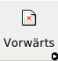 |
|
| 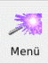 |
Menü:
Ein mit dem Menü der rechten Maustaste identisches Menü wird geöffnet.
|
- |
|
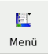 |
 |
Info:
Wechsel auf die Notebookseite "Über MAGuS"
|
- |
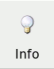 |
 |
| |
Anleitung:
Öffnet diese Hilfe
|
- |
|
|
 |
Schließen:
Beendet MAGuS mit Nachfrage bei ungesicherten Abenteurern
|
STRG-Q |
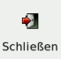 |
 |
|
| Zum Seitenanfang |
Notebook-Seiten
Die Notebook-Seiten grenzen die verschiedenen Module von MAGuS untereinander ab.
MAGuS-Style
|
Auch für die Notebook-Tabulatoren (oder auch -reiter) gibt es MAGuS-Style, Gtk+-Style und an WindowsXP angelehnte Icons. |
Gtk-Style
|
Win32-Style
|
 |
Grundwerte:
Auf dieser Seite werden die Grundeigenschaften und Grundlegenden Werte der Figuren ermittelt und verwaltet.
|
|
 |
 |
Lernschema:
Hier werden die alle Fertigkeiten und Eigenschaften bestimmt, die ein Abenteurer bei seiner Erschaffung besitzt
|
|
 |
 |
Steigern:
Auf der Notebook-Seite "Steigern" findet das Steigern und die Verwaltung der Abenteurer statt.
|
|
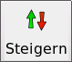 |
 |
Beschreibung:
Eine ausführliche Beschreibung des Abenteurers kann auf der Notebookseite "Beschreibung" erstellt werden.
|
|
|
 |
Ausrüstung:
Ein Abenteurer erh&äuml;lt seine Ausrüstung auf aüf dieser Notebookseite.
|
|
|
| |
Einstellungen:
Auf der Seite "Optionen" können verschiedene Eigenschaften von MAGuS -wie das Erscheinungsbild und
verwendete Hilfsprogramme- verändert werden
|
|
 |
|
Über MAGuS:
Diese Notebookseite informiert u.a. über die Programmautoren und Copyright Vermerke.
|
|
|
 |
Neuigkeiten:
Hier findet sich eine Übersicht über den aktuellen Stand der MAGuS-Entwicklung.
|
|
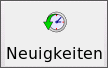 |
 |
Zufallsgenerator:
MAGuS bietet hier die Möglichkeit, (Nichtspieler-)Figuren schnell und regelkonform nach dem Zufallsprinzip zu
generieren und zu steigern. |
|
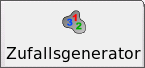 |
|
| Zum Seitenanfang |
Statuszeile
In der Statuszeile werden verschiedene Informationen angezeigt. So werden die Anweisungen des Wizards ebenso in der Statuszeile
angezeigt, wie (in Form von Icons) die aktiven Regionen, sowie verschiedene MAGuS-Modi.
| |
Auch für die Statuszeile existieren eine MAGuS- und eine an WindowsXP angelehnte Version der Icons |
|
| |
Midgard-Logo:
Wenn MAGuS im Orginal-Regel-Modus ist, ist das Midgard-Logo in der Statuszeile sichtbar.
|
|
| |
Nichtspielerfiguren-Icon:
Wenn sich MAGuS im Modus für Nichtspielerfiguren befindet, so ist dieses Icon in der
Statuszeile sichtbar
|
 |
|
|
MAGuS-Icon:
Das MAGuS-Icon zeigt drei verschiedene Modi an, in welchen sich MAGuS befinden kann:
normales Icon: Der Wizard ist aktiv
ausgegrautes Icon: doppeltes Würfeln wird verhindert
durchgestrichenes Icon: Alle Funktionen sind anwählbar, der Wizard ist deaktiviert
|
|
|
|
Eingabemodus-Icon:
Über dieses Icon ist der Eingabe-Modus von MAGuS auswählbar:
Würfeln:
Die Werte werden durch MAGuS ausgewürfelt
Eingabe:
Die Werte werden von Hand eingegeben
|
|
| 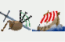 |
Regionen:
Die Icons der aktiven Regionen werden angezeigt
|
|
|
| Zum Seitenanfang |
Maus-Menüs
Es gibt drei verschiedene Menüs, die über die rechte Maustaste zugänglich sind.
Das Standard-Menü erhält man, sobald man die rechte Maustaste über einer leeren Fläche betätigt.
Ein zweites Menü existiert für Auswahlfenster. Dieses erhält man, indem man die rechte Maustaste innerhalb eines Auswahlfensters betötigt
Ein drittes Menü erscheint in Texteingabe-Feldern.
- Standard-Menü:
- Original-Regel-Menü:
- alle Regeln abschalten:
Bietet dem Spielleiter die Möglichkeit Figuren ohne Einschränkungen durch Regeln zu
erschaffen.
- Originalregeln:
Mit aktivierten Orignalregeln wird eine Spielfigur im Rahmen der original Midgardregeln erschaffen.
- Lernschema- und Steigern-Fenster aktivieren:
Die genannten Fenster werden aktiviert
- Werte editieren:
Die Grundwerte können editiert werden
- Mit EP/PP steigern:
EP/PP werden beim Steigern aufgewand
- NSC-Modus:
Der Modus zur Bearbeitung von Nichtspielerfiguren wird ein- oder ausgeschaltet.
- Drucken:
- Abenteurer drucken (LaTeX):
Erstellt das "Hauptdokument" mit allen wichtigen Werten und Fertigkeiten
- Abenteurer Beschreibung drucken:
Das Dokument mit der Abenteurerbeschreibung wird erstellt
- Ausrüstungsdokument drucken (Alles):
Es wird ein Dokument mit allen Ausrüstungsteilen erstellt.
- Ausrüstungsdokument drucken (Nur sichtbare Gegenstände):
Es wird ein Dokument erstellt, welches nur die für dritte sichtbare Ausrüstung zeigt
- Leeres Abenteurerdokument drucken:
Es wird ein leeres "Hauptdokument" erzeugt.
- Regionen:
Hier können Regionen und Regelerweiterweiterungen gewählt werden (siehe: Optionen)
Unterr dem Punkt Ausgewählte Regionen zum Standard machen können die aktivierten Regionen
als Standard für weitere Figuren definiert werden, so dass nicht für jede neue Figur die Regionen einzeln aktiviert werden müssen.
- Erweiterungen:
- Originalregeln:
Mit aktivierten Orignalregeln wird eine Spielfigur im Rahmen der original Midgardregeln erschaffen.
- NSC-Modus:
Der Modus zur Bearbeitung von Nichtspielerfiguren wird ein- oder ausgeschaltet.
- Zauberbeschreibung drucken:
Auf dem Abenteurer-Dokument wird bei Zaubern zusätzlich eine Kurzbeschreibung ausgedruckt
- 1GS entspricht 1 GFP:
Hausregel für Gruppen, die mit gezehntelten Goldbeträgen spielen, bei der 1 GFP statt
10GS nur einem GS entspricht.
- Grundwerte über 100 zulassen:
Hausregel für Gruppen, die Grundwerte über 100 zulassen.
- Ansicht & Fenster:
- Info Fenster zeigen:
Öffnet das Info-Fenster
- Lernschema/Steigern auswählbar machen:
Hiermit werden die Funktionen auf den Notebookseiten "Lernschema" und "Steigern" aktiviert.
- Auswahlfenster-Menü
Mit diesem Menü läßt sich das Erscheinungsbild des jeweiligen Auswahlfensters beeinflussen:
- Zurücksetzen
Die Standardeinstellungen des Auswahlfensters werden wiederhergestellt,
- Abbrechen
Menü wird geschlossen
- Neuordnen:
Die Spalten werden in der gewählten Reihenfolge angeordnet
- Sichtbare Spalten
Es wird ein Untermenü geöffent, in dem (abhängig vom jeweilige Auswahlfenster) einzelne Spalten an- oder
abgewählt werden können.
- Optionen
Hier können, abhängig vom Auswahlfenster verschiedene Optionen aktiviert oder deaktiviert werden
- Spaltenüberschriften anzeigen:
Anzeige der Spaltenüberschriften Ein/Aus (Standard: Ein)
- Standardreihenfolge:
Mit Standardreihenfolge auffüllen
- gewählte Knoten expandieren:
Ausklappen zusammengefasster Listen
- Tiefe farblich markieren:
Die Tiefe von Listen wird farblich markiert
- Alles aufklappen:
Ausklappen aller zusammengefasster Listen
- Alles zuklappen:
Einklappen zusammengefasster Listen
- Editor-Menü:
Innerhalb von Texteingabefeldern iat (abhängig vom Windowmanager?) ein Standardeditiermenü verfügbar
|
| Zum Seitenanfang |
|